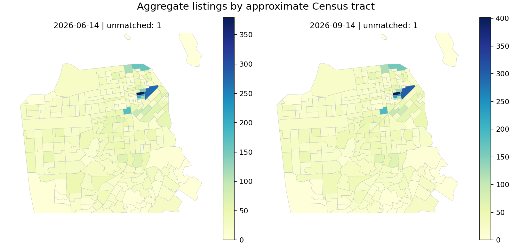

San Francisco · Quarterly QC · 2026 upgradeReliable data before the dashboard.
Two public listing snapshots, explicit Census provenance, and a publication gate that fails when integrity breaks.
Passed · 20 batch checks · 10 independent metric reconciliations
Snapshot scorecard
| Release |
Retained listings |
Hosts |
Quarantined |
Missing price |
Advertised price mean (USD) |
| 2026-06-14 |
7328 |
3496 |
4 |
1400 |
413.957 |
| 2026-09-14 |
7394 |
3485 |
11 |
1714 |
462.218 |
Prices are advertised USD listing prices, not realized revenue. Availability is not occupancy. Counts are specific to each snapshot. Missing prices stay missing and are excluded only from the price mean. Download complete metrics and scrape-date ranges.
Coverage changed; demand is not established.
| from |
to |
previous |
current |
continuing |
newly_observed |
no_longer_observed |
| 2026-06-14 |
2026-09-14 |
7328 |
7394 |
6790 |
604 |
538 |
Newly observed and no-longer-observed listings may reflect collection coverage or platform changes. These counts do not measure causal market growth or demand.
Spatial joins retain an audit trail.
| snapshot_date |
zero |
one |
multiple |
input_rows |
| 2026-06-14 |
1 |
7327 |
0 |
7328 |
| 2026-09-14 |
1 |
7393 |
0 |
7394 |

Anonymized coordinates; approximate tract context. Generalized 2023 cartographic boundaries at 1:500,000. Multiple matches use lowest GEOID deterministically.
Census income keeps its uncertainty.
| input_rows |
output_rows |
matched |
unmatched |
income_available |
vintage |
snapshot_date |
| 7328 |
7328 |
7327 |
1 |
7177 |
2023 |
2026-06-14 |
| 7394 |
7394 |
7393 |
1 |
7233 |
2023 |
2026-09-14 |
ACS 2019-2023 five-year estimates in 2023 inflation-adjusted dollars, with 90% MOE. Regional income is not host income. Sentinel and top-coded values retain annotations and do not enter means as exact values.
Reproducibility and scope
Verified source hashes, one-to-one snapshot keys, explicit quarantine, atomic partition replacement, idempotent reruns, and independent SQLite metric reconciliation. Fault-injection tests intentionally block duplicates, invalid schema, bad dates, bad availability and duplicate Census keys.
The original collaborative Spark/Sedona/Airflow/Snowflake/Tableau project is retained with attribution. This local QC slice is new work. The original VM and Tableau workbook were not rerun in this environment.
Batch checks · SQL reconciliation · Sources and hashes · Run log · Boundary policy
Sources: Inside Airbnb (CC BY 4.0), US Census ACS 2023 B19013 and 2023 cartographic tract boundaries. Data transformed for validation and aggregate reporting. Snapshot dates identify provider releases; the June release contains 1,620 rows scraped on June 22 and 5,712 on June 14, all in Q2. Exact scrape dates are preserved. Missing minimum-nights rows were quarantined after source review (4 in June, 11 in September); the original failed gate is retained as evidence. Raw/row-level records are excluded from Git.